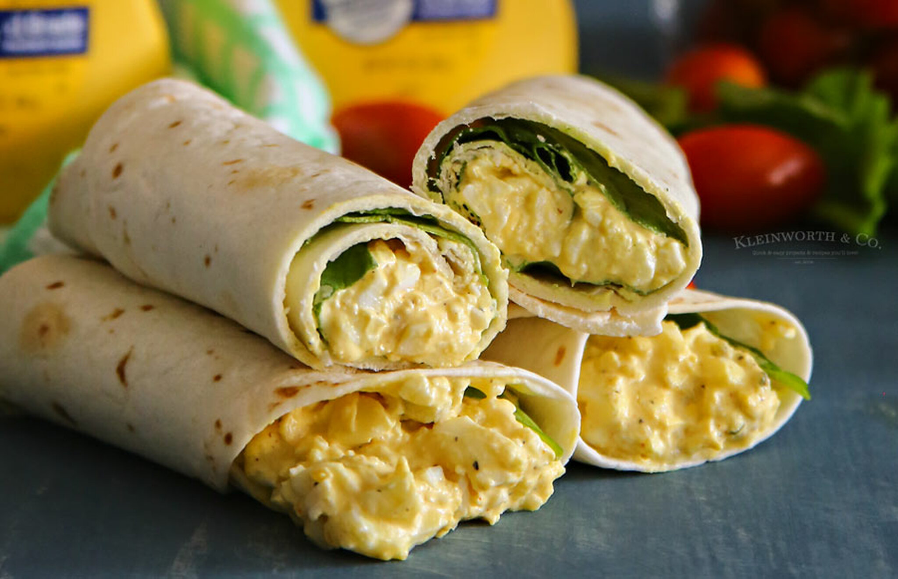

Filling Egg Salad Burrito

Description
If you want something that is quick to cook, yet very filling and nutritious
then this easy recipe got you covered.
Ingridients
- 4 tortillas
- 4 eggs
- 2 tablespoons mayonase
- ½ cucumber peeled and chopped
- ½ onion chopped
- 2 teaspoons sweet pickle relish
- 2 teaspoons mustard
- ½ teaspoon black peper
Directions
- Hardboil eggs. Separate yolk and put in a bowl.
- Add mayonase, mustard, peper and relish to yolk, mix to paste.
- Chop whites and add to paste with onion and cucumber and mix.
- Put salad on tortillas (about two tablespoons of salad per tortillas) and wrap them.
- Cook tortillas on a low heat pan for 30 seconds on each side.